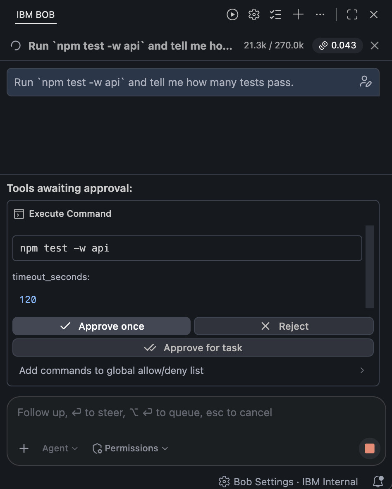
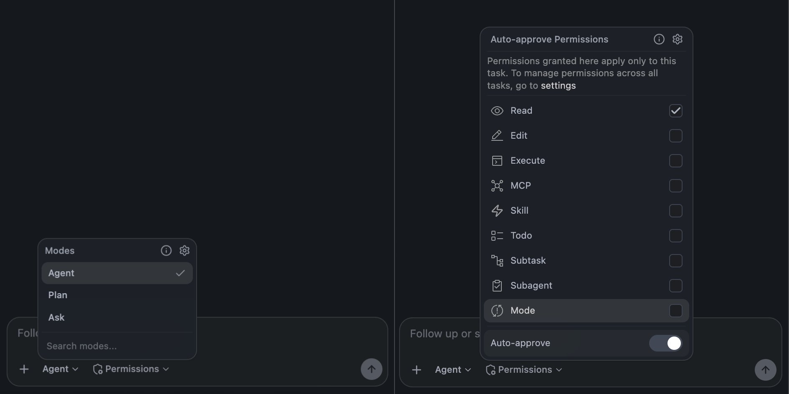
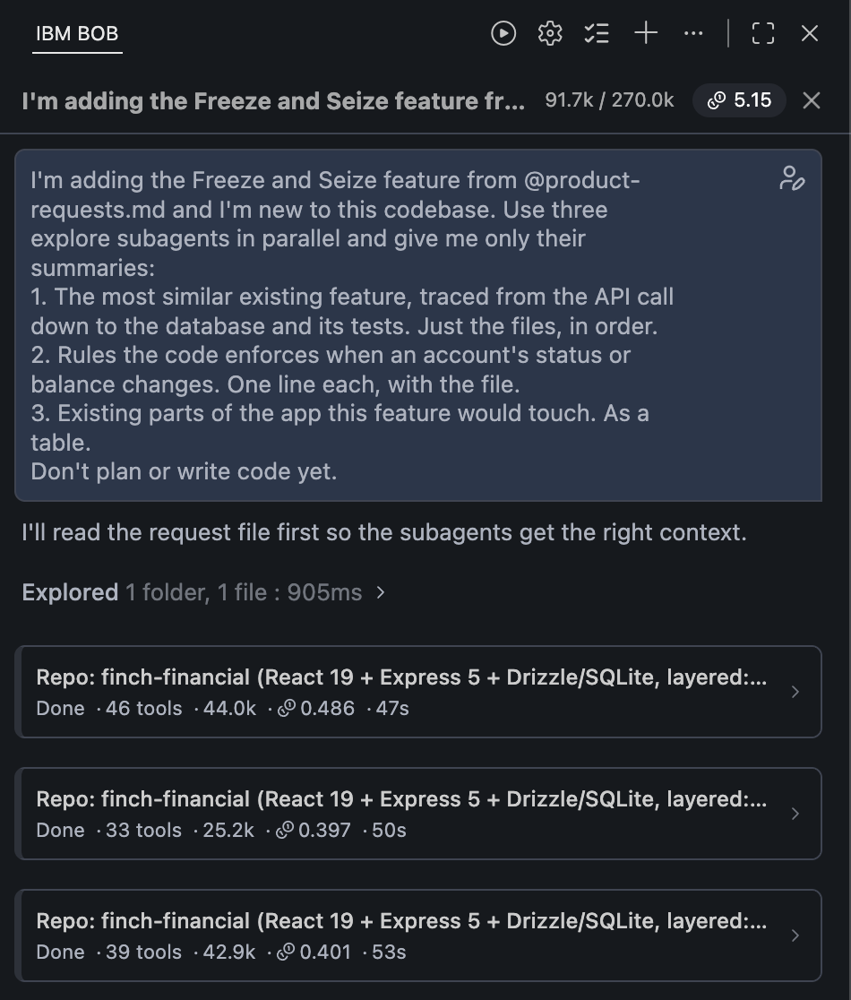
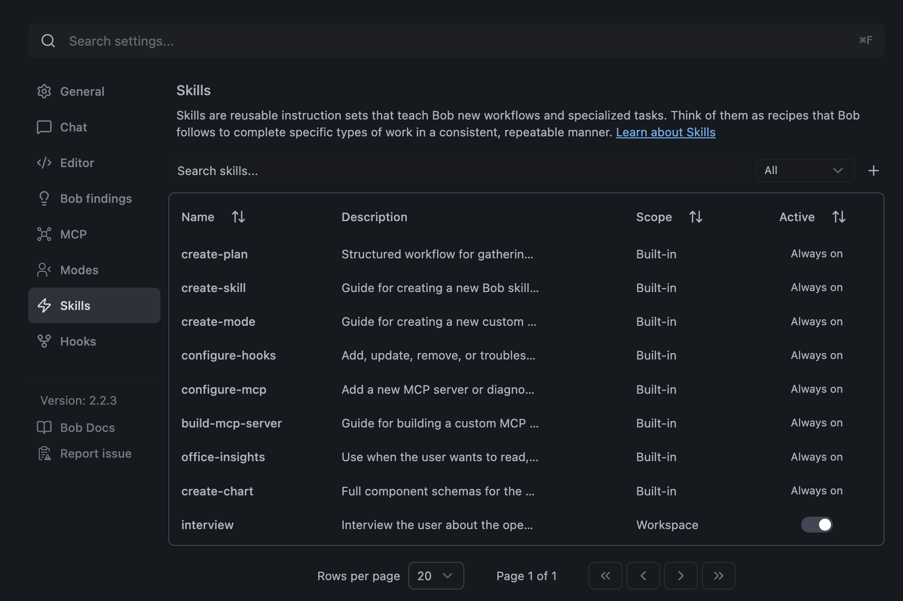
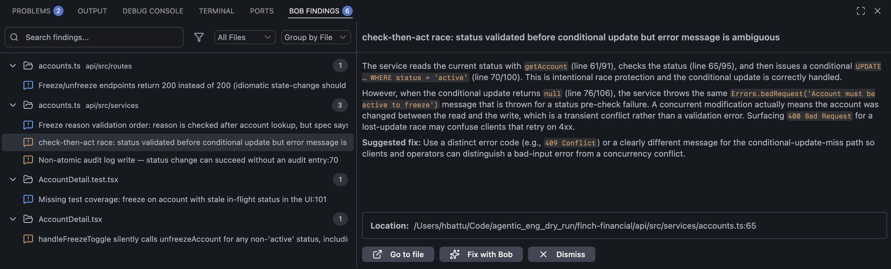
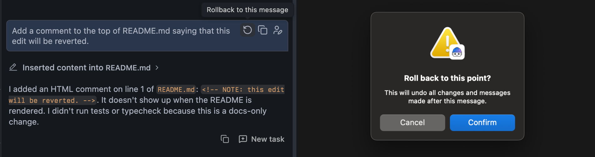

Module 0: Get to Know Your Agentic Tool¶
A walkthrough of the parts of IBM Bob you will see during the workshop. Nothing to run here. Open Bob alongside this page and find each thing as it comes up. The instructor will tour sections 1, 2, 4, 5 and 6 live. Section 3 is explained in Module 1, where you'll watch it happen.
1. The Chat Panel¶

This is where you work. Five things to locate:
- Chat history. Your requests, Bob's responses, and every action Bob took: file edits, commands, subagent runs. Actions are expandable, so you can see what was read or changed.
- The task header. Two numbers at the top right: context in use against the window size (for example
21.3k / 270.0k) and the cost of the task so far. Watch the first one during Module 1's subagent fan-out. It's how you see context isolation working. - Mode selector, at the bottom left of the input. Which set of permissions Bob is working with (next section).
- Permissions dropdown, next to the mode selector. One setting per kind of action Bob can take. Off means Bob asks first. On means it proceeds. In an enterprise deployment some of these can be locked by policy. Details in the next section.
- Approval cards. When Bob wants to do something that isn't pre-approved, a card appears above the input showing exactly what it will do (the command, the file, the subagent task) with three choices: Approve once, Approve for task, or Reject. "Approve for task" is the middle ground: no more prompts for that kind of action until this task ends. Commands can also be added to a global allow or deny list. This card is the human gate, and the workshop is about deciding where to leave it in place.
Also in the input: type @ to reference a file, a folder, @problems (current diagnostics) or @terminal (recent output). Handing Bob a file this way is how you stop it guessing which one you mean.
2. Modes and Permissions¶

Both controls sit at the bottom of the input. Together they decide what Bob may do and whether it asks first.
Modes. A mode is a set of permissions, not a personality.
| Mode | Reads | Edits files | Runs commands | Subagents |
|---|---|---|---|---|
| Ask | yes | no | no | explore only |
| Plan | yes | yes | no | explore only |
| Agent | yes | yes | yes | all |
Ask is for understanding a codebase without touching it. Plan can write files but not run anything, which makes it right for producing documents. Agent does everything. Bob can switch modes on its own mid-task, and teams can define custom modes with their own tool restrictions in .bob/custom_modes.yaml.
Permissions. Within whatever the mode allows, the Auto-approve Permissions dropdown decides which actions Bob takes without asking: Read, Edit, Execute, MCP, Skill, Todo, Subtask, Subagent, Mode, plus a master Auto-approve switch. Everything off means a card for every action. Everything on means Bob runs until it's done or stuck. Choices made here apply to the current task only. The settings link at the top of the dropdown opens the global version that applies to every task. In Module 2 you'll turn on Auto-approve and watch the whole build run with no clicks.
In the workshop: Module 1 starts in Ask and moves to Plan at the point where a file gets written. Module 2 runs in Agent with permissions on. Module 3's independent reviewer runs in Ask so that it cannot fix what it finds.
3. Subagents¶

A subagent is a separate agent with its own empty context. Bob gives it one task, it does the reading, and only a summary comes back to your conversation. Everything it read is discarded with it.
Bob spawns subagents sparingly: when a task is self-contained, would flood your chat with content you don't need to keep, and can't be done in a tool call or two. Exploring a codebase is the textbook case. There are two types: explore (read-only, runs on a lighter model) and general (full tools). You approve each spawn unless subagents are pre-approved in the Permissions dropdown.
When several run at once, each appears as a card in the chat with its own line of stats: done or running, tool calls made, tokens used, cost, elapsed time. Expand a card to see its tool calls. Compare the cards' token counts to the context counter in the task header: that difference is the reading that happened inside the subagents and never entered your conversation.
Subagents vs. subtasks
A subagent runs silently and returns a summary. A subtask is a separate conversation thread with its own breadcrumb that you can follow and continue. Subagents for background reading, subtasks for work you want to watch.
4. Skills, Rules, and AGENTS.md¶

Three ways a repo teaches Bob how it works. All of them live in the repo, so the whole team gets the same behavior.
AGENTS.mdat the repo root. Loaded automatically on every conversation. Architecture, conventions, commands, how to behave. The workshop repo has one. Open it and skim before Module 1..bob/rules/. Extra instruction files loaded alongsideAGENTS.md. Per-mode variants (.bob/rules-plan/,.bob/rules-agent/) apply only in that mode. Global rules live in~/.bob/rules/. The workshop repo doesn't use any.AGENTS.mdcarries everything..bob/skills/<name>/SKILL.md. A reusable workflow with a name and a description. Bob activates a skill when your request matches its description, and asks first unless skills are pre-approved in the Permissions dropdown. Supporting files (templates, checklists) sit beside it.
Settings → Skills lists everything loaded with its scope. Built-in skills (scope Built-in, always on) include create-plan, the workflow Plan mode runs on entry, and helpers for creating skills, modes, hooks and MCP servers. The workshop repo's interview skill shows with scope Workspace and a toggle. It's the file at .bob/skills/interview/SKILL.md, and you'll use it in Module 1.
The pattern across all three: structure lives in files, so prompts stay short.
5. Code Review¶

Type /review or open the Review panel from the sidebar. Pick a comparison branch (your current branch, main, a remote), choose whether to include uncommitted changes, optionally attach a GitHub issue to validate against, and start. It runs auto-approved.
Findings land in the Bob Findings tab in the editor's bottom panel, next to Problems and Terminal, grouped by file with a count per file. Select one to read the explanation and suggested fix. Each has three actions: Go to file, Fix with Bob, and Dismiss, and @problems pulls them into the chat.
The reviewer reads the diff and nothing else. It doesn't know what you decided or why, and it is sometimes wrong. Module 3 is built on treating its findings as things to triage, not instructions to apply.
6. Rollback¶

Every message of yours that led to file changes carries a rollback icon. Click it, confirm, and Bob undoes every file change and removes every message made after that point. The task continues from there as if the later turns never happened. Rollback belongs to the task it happened in. For anything else, the uncommitted working tree and git restore . are the reset.
Also in Bob
Not covered in the workshop, but worth knowing they exist:
- Prompt enhance: a button that rewrites your prompt before sending. Leave it alone during the demos.
- Literate coding: lets you write instructions inline in the editor.
- Code actions: offer lightbulb fixes.
- Commit messages and pull requests: Bob can draft both.
- MCP servers: connect external tools and data.
- Lifecycle hooks: run shell commands at points in a session to log, inject context, or block actions.
- Bob Shell: brings the same agent to the terminal, sharing task history with the IDE.